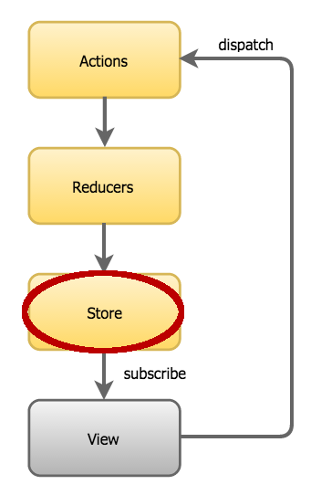
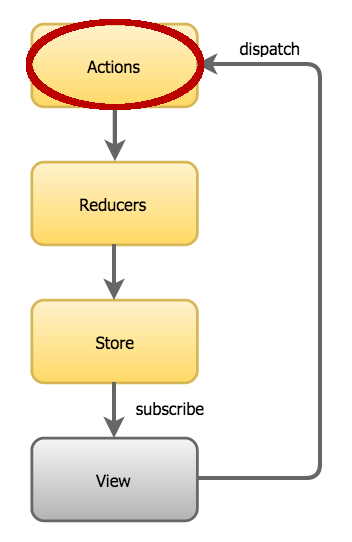
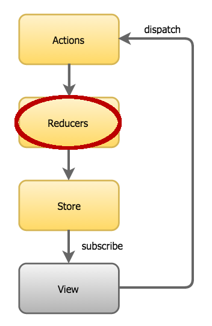
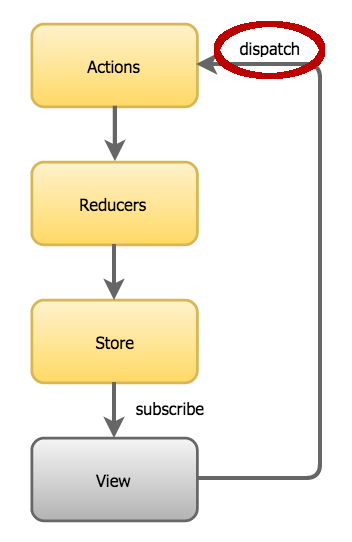
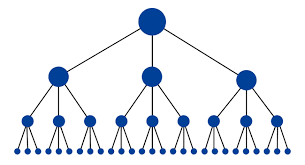
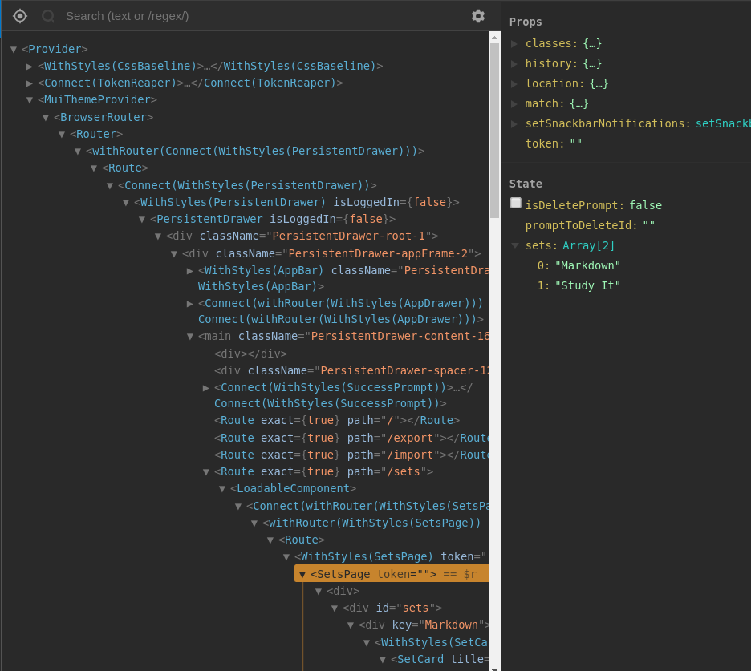
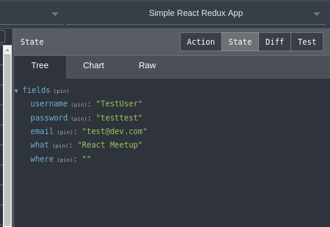
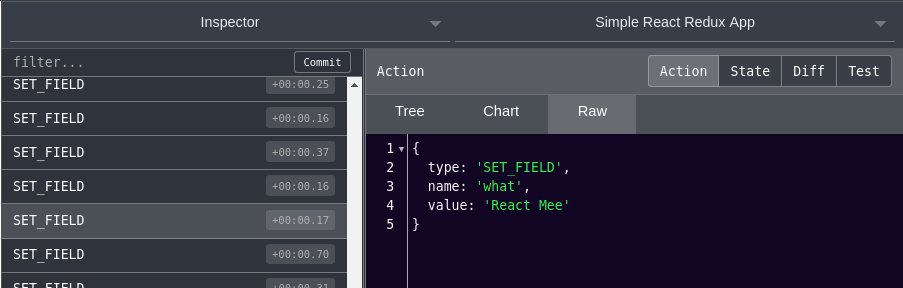

class: center, middle, largeText # Redux predictable state container --- class: largeText # Talk ---- ## Creating Apps ## Pros and Cons ## Conclusion --- class: largeText, center, middle # Creating Apps ---- --- class: largeText, center, middle # Creating Apps ---- ## Three Principles ## Plane Redux App ## React/Redux App ## Async --- class: largeText, center, middle # Creating Apps ---- ## Three Principles --- class: largeText # Three Principles ---- <table style="width: 100%"> <tr> <td style="width: 25%"></td> <td style="width: 50%"> <img src="./images/redux-flow.png"> </td> <td style="width: 25%"></td> </tr> </table> --- class: largeText # Store ---- <table style="width: 100%"> <tr> <td style="width: 50%"> <h2>Holds applications state</h2> <h2>Immutable but replaceable</h2> <h2>Triggers changes in the view</h2> </td> <td style="width: 50%">  </td> </tr> </table> --- class: largeText # Actions ---- <table style="width: 100%"> <tr> <td style="width: 50%"> <h2>Just an Object</h2> <h2>Represents state change</h2> </td> <td style="width: 50%">  </td> </tr> </table> --- class: largeText # Reducers ---- <table style="width: 100%"> <tr> <td style="width: 50%"> <h2>Use Pure Functions</h2> <h2>Takes In An Action</h2> <h2>Replace State (immutable)</h2> <h2>Only Place That Changes The Store</h2> </td> <td style="width: 50%">  </td> </tr> </table> --- class: largeText # Dispatch ---- <table style="width: 100%"> <tr> <td style="width: 50%"> <h2>Passes Action to Reducer</h2> <h2>Called by a View</h2> <h2>Called From Async Function</h2> </td> <td style="width: 50%">  </td> </tr> </table> --- class: largeText, center, middle # Creating Apps ---- ## Plane Redux App --- class: largeText # Action ---- ```javascript const action = {type: 'INCREMENT', add: 5} ``` --- class: largeText # Simplest Reducer ---- ## Inputs - Entire Redux state - Action to preform ## Output - New entire store ```javascript function reducer (state, action) { return newState } ``` --- class: largeText # Naive Reducer ---- ``` javascript function reducer (state, action) { return { count: state.count + action.add } } ``` ## Problems - Store only has "count" and will not work with a store like this ```javascript { count: 5, userName: 'Ashley' } ``` - Expects a single action --- class: largeText # Typical Reducer ---- ```javascript function reducer(state, action) { switch(action.type) { case 'INCREMENT': return Object.assign({}, state, { number: (state.number + action.add) }) default: return state } } ``` --- class: largeText # Store ---- ```javascript const { createStore } = require('redux') const store = createStore(reducer, {number: 0}) ``` --- class: largeText # Listen ---- ```javascript function listener () { console.log('checking state', store.getState()) } store.subscribe(listener) ``` --- class: largeText # Dispatch ---- ```javascript store.dispatch(action) store.dispatch(action) ``` --- # Full Redux ---- ```javascript const { createStore } = require('redux') // Action // action = {type: 'INCREMENT', add: 5} // Reducer // function reducer(state, action) { switch(action.type) { case 'INCREMENT': return Object.assign({}, state, { number: (state.number + action.add) }) default: return state } } // Store // const store = createStore(reducer, {number: 0}) // Listener // function listener () { console.log('checking state', store.getState()) } store.subscribe(listener) // Dispatch // store.dispatch(action) store.dispatch(action) ``` --- class: largeText, center, middle # Creating Apps ---- ## React/Redux App --- class: largeText, center, middle # React/Redux App ---- ## Package "react-redux" ## Index.js ## Reducer.js ## Component.js --- class: largeText # Package "react-redux" ---- ## Install "react-redux" ```bash npm install --save react-redux ``` ## API ### createProvider = Create a Provider for component state access ### connect = Hook up component to state --- class: largeText # Index.js ---- ## Imports ```javascript import React from 'react' import ReactDOM from 'react-dom' import {createProvider} from 'react-redux' import { createStore } from 'redux' import Component from './Component' import reducer from './Reducer' ``` --- class: largeText # Index.js ---- ## Provider And Store ```javascript const Provider = createProvider() const store = createStore(reducer, {count: 0}) ``` --- class: largeText # Wrap Components In Provider ```jsx <Provider store={store}> <Component/> </Provider>, ``` --- class: largeText # Index.js ---- ## Render App ```jsx ReactDOM.render( <Provider store={store}> <Component/> </Provider>, window.document.getElementById('app') ) ``` --- class: largeText # Index.js ---- ```jsx import React from 'react' import ReactDOM from 'react-dom' import {createProvider} from 'react-redux' import { createStore } from 'redux' import Component from './Component' import reducer from './Reducer' const Provider = createProvider() const store = createStore(reducer, {count: 0}) ReactDOM.render( <Provider store={store}> <Component/> </Provider>, window.document.getElementById('app') ) ``` --- class: largeText # Reducer.js ---- ```javascript export default function reducer(state, action) { switch(action.type) { case 'INCREMENT': return Object.assign({}, state, { count: state.count + 1 }) case 'DECREMENT': return Object.assign({}, state, { count: state.count - 1 }) default: return state } } ``` --- class: largeText # Component.js ---- ## Normal Component Parts ```jsx import React from 'react' function Component({count, increment, decrement}) { return ( <div> <button onClick={decrement}>-</button> Count {count} <button onClick={increment}>+</button> </div> ) } ``` --- class: largeText # Inject Redux Into Component ## Normal Export ```javascript export default Component ``` ## Redux Injection ```javascript export default connect(mapStateToProps, mapDispatchToProps)(Component) ``` ## Why - State as props - State changes as props --- class: largeText # mapStateToProps ---- ## Input - All of Redux state ## Output - Object with props to inject ```javascript const mapStateToProps = (state) => ({ count: state.count }) ``` --- class: largeText # mapDispatchToProps ---- ## Input - Dispatch function ## Output - Object with props to inject ```javascript const mapDispatchToProps = (dispatch) => ({ increment: () => dispatch({type: 'INCREMENT'}), decrement: () => dispatch({type: 'DECREMENT'}) }) ``` --- class: largeText # Component.js ---- ## React/Redux Parts ```javascript import {connect} from 'react-redux' const mapStateToProps = (state) => ({ count: state.count }) const mapDispatchToProps = (dispatch) => ({ increment: () => dispatch({type: 'INCREMENT'}), decrement: () => dispatch({type: 'DECREMENT'}) }) export default connect(mapStateToProps, mapDispatchToProps)(Component) ``` --- class: largeText # Component.js ---- ```jsx import React from 'react' import {connect} from 'react-redux' function Component({count, increment, decrement}) { return ( <div> <button onClick={decrement}>-</button> Count {count} <button onClick={increment}>+</button> </div> ) } const mapStateToProps = (state) => ({ count: state.count }) const mapDispatchToProps = (dispatch) => ({ increment: () => dispatch({type: 'INCREMENT'}), decrement: () => dispatch({type: 'DECREMENT'}) }) export default connect(mapStateToProps, mapDispatchToProps)(Component) ``` --- class: largeText, center, middle # Creating Apps ---- ## Async --- class: largeText # Async ---- ## redux-thunk ## redux-saga --- class: largeText # redux-thunk ---- Without redux-thunk you `dispatch` an object ```javascript dispatch({ type: 'ADD', number: 3 }) ``` With redux-thunk you `dispatch` a function ```javascript fuction thunk (dispatch) { dispatch({ type: 'ADD', number: 3 }) } dispatch(thunk) ``` --- class: largeText # redux-thunk ---- A function is useful for using async operations Example 1 ```javascript function add3Delayed (dispatch) { setTimeout( () => dispatch({ type: 'ADD', number: 3 }), 3000 ) } ``` Example 2 ```javascript function getTodoItem (dispatch) { fetch('https://jsonplaceholder.typicode.com/todos/1') .then(response => response.json()) .then(json => Object.assign({}, json, { type: 'ADD_TODO' })) .then(action => dispatch(action)) } ``` --- class: largeText, center, middle # Pros and Cons ---- --- class: largeText # Redux Pros 😊 ---- ## Transparent state ## Track changes (DOM +) ## State snapshoting ## Removes prop drilling ## Shared state is less complex ## Time Travel --- class: largeText # Redux Cons 😭 ---- ## Complexity ## Boiler plate ## Team learning ## Time --- class: largeText, center, middle # Pros and Cons ---- ## State Predictability Comparison --- class: largeText # State Predictability Comparison ---- ## In JQuery - Whole App ## In React - Hierarchical ## In Redux - Store --- class: largeText # JQuery (Whole App) ---- <img src="./images/shrug.png" height="100"> ## Where Does State Live? - Anywhere ## Where Is State Modified? - Anywhere ## When Did State Change? - Hard To Know --- class: largeText # React (Hierarchical) ----  ## Where Does State Live? - Mostly Component or Parent ## Where Is State Modified? - Mostly Component or Children ## When Did State Change? - Debug function that changes state --- class: largeText # Redux (Store) ---- ## Where Does State Live? - Store ## Where Is State Modified? - One Reducer ## When Did State Change? - See actions live --- class: largeText, center, middle # Pros and Cons ---- ## Browser Plugin --- class: largeText # React vs Redux Plugin ---- ## React - Find State ## Redux - Find State - See Actions - Time Travel - Load State --- class: largeText # React Plugin ---- <table style="width: 100%;"> <tr> <td> <h2>Finding State</h2> <ul> <li>Difficult to navigate</li> <li>Check all Parents</li> <li>Better then JQuery</li> </ul> </td> <td style="text-align: right; width: 500px">  </td> </tr> </table> --- class: largeText # Redux Plugin ---- <table style="width: 100%;"> <tr> <td> <h2>Finding State</h2> <ul> <li>Easy</li> </ul> <h2>See Actions</h2> <ul> <li>Live</li> </ul> <h2>Time Travel</h2> <h2>Load State</h2> </td> <td style="text-align: right; width: 500px;">  <div style="margin-bottom: 0.5rem;"></div>  </td> </tr> </table> --- class: largeText, center, middle # Conclusion ---- --- class: largeText, center, middle # Conclusion ---- ## Warnings ## Personal Habits ## Consider Redux When? --- class: largeText # Warnings ---- ## Mixing React state and Redux state can - Midigate benifits of state predicability --- class: largeText # Patterns ---- ## State - All state in Redux - Only global state in Redux - All but component specific state in Redux ## --- Be Consistent --- --- class: largeText # Consider Redux When? ---- ## Need "Context" API in React ## State changes for many reasons ## Many components share state